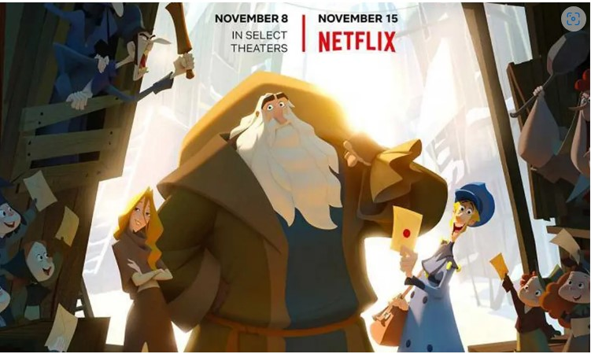

La película Red (Turning Red) de Disney y Pixar cuenta la historia de Mei Lee,
una adolescente de 13 años que, al emocionarse demasiado, se transforma en un
panda rojo gigante. Es una comedia animada que mezcla humor con temas de
adolescencia, familia y amistad.
VIERNES 13
Un grupo de jóvenes monitores llega al campamento Crystal Lake para prepararlo
antes de su reapertura, tras años cerrado por un accidente. Mientras trabajan,
comienzan a suceder muertes misteriosas y un asesino acecha desde las sombras
del bosque.
EL RESPLANDOR
Jack Torrance, un escritor en busca de inspiración, acepta trabajar como
cuidador de invierno en el aislado Hotel Overlook. Se muda allí con su esposa
Wendy y su hijo Danny, quien posee habilidades psíquicas conocidas como
“el resplandor”.
Área de la sección Animación
Spirit
La película, estrenada en 2002 y dirigida por Kelly Asbury y Lorna Cook,
cuenta la historia de Spirit, un caballo mustang salvaje que vive en las
vastas praderas del Viejo Oeste. La trama sigue su lucha por mantener la
libertad frente a los intentos de los humanos de domarlo.
Klaus

Klaus (2019), dirigida por Sergio Pablos y codirigida por Carlos Martínez
López, es una propuesta navideña que busca dar un origen a la figura de
Santa Claus y a las leyendas que lo rodean. La historia sigue a Jesper,
un joven cartero perezoso y egoísta enviado a un remoto pueblo helado.
Área de la sección de Acción
Bad Boys
La primera película de la saga Bad Boys se estrenó en 1995, dirigida por
Michael Bay y protagonizada por Will Smith y Martin Lawrence. Fue un éxito
que mezcló acción explosiva con comedia, convirtiendo a los dos actores en
una dupla icónica del género policial.
Gladiador
La historia se sitúa en el año 180 d.C., cuando el Imperio Romano domina
gran parte del mundo. Tras una victoria contra los bárbaros, el emperador
Marco Aurelio decide entregar el poder a Máximo, un general leal y respetado.
Sin embargo, su hijo Cómodo no acepta esta decisión y ordena la ejecución de
Máximo.